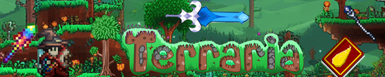
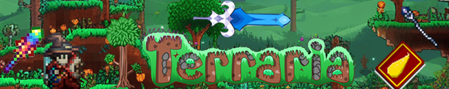

As a mage it might seem really difficult at the begging, espicially when you are in mighty MasterMode
First things first, chop down wood, build a base, or npc temporary houses, as since 1.4 update
pylons were added which are crucial in early hardmode After that, you might want to explore the world for a bit, and find some early game accessories, such as
hermitsboots ,a Cloud in a bottle
Climbing claws and more
The next step after you have some accessories, is to go ahead and farm for Life Crystals,
Mana Stars
and make a hook out of any not rare gem
like amber,
or get one from Zoologist
After you found enough life
Life Crystals ( it totally depends on your skill) you can go ahead and start looking for precious gems in order to make you first mage weapon, that you will be using until
you defeat Skeletron what you want to make is either emerald, diamond or ruby
Staff If you have Gold ore in your world you will
go with ruby staff, or if you have
Platinum you will go with the best pre skeletron staff-the
Diamond Staff
After you were able to max out your mana and hp, its time to get your set of armor that you will likely use untill
Hardmode this would the Jungle armor set Its a bit of a grind to get in master mode, make sure you
have Mana positions that you could get from the
Merchant
 
